| run_id | label | approach | model | reasoning | pipeline_version | path | notes | source |
|---|---|---|---|---|---|---|---|---|
| approach1_062326_nano_medium | Approach 1 062326 Nano Medium | approach1 | gpt-5-nano | medium/default | new_refactored | /Users/lukezhao/projects/onc/sabcs/securegpt_dispersion_approach1_pipeline_062326 | New refactored pipeline; default/medium reasoning. | directory |
| approach2_062326_nano_minimal | Approach 2 062326 Nano Minimal | approach2 | gpt-5-nano | minimal | new_refactored | /Users/lukezhao/projects/onc/sabcs/securegpt_dispersion_approach2_pipeline_062326 | New refactored pipeline; minimal reasoning. | directory |
| approach1_062426_nano_low | Approach 1 062426 Nano Low | approach1 | gpt-5-nano | low | new_refactored | /Users/lukezhao/projects/onc/sabcs/securegpt_dispersion_approach1_pipeline_062426 | New refactored pipeline; low reasoning. | directory |
| approach2_062426_nano_low | Approach 2 062426 Nano Low | approach2 | gpt-5-nano | low | new_refactored | /Users/lukezhao/projects/onc/sabcs/securegpt_dispersion_approach2_pipeline_062426 | New refactored pipeline; low reasoning. | directory |
| approach2_062426_nano_medium | Approach 2 062426 Nano Medium | approach2 | gpt-5-nano | medium/default | new_refactored | /Users/lukezhao/projects/onc/sabcs/securegpt_dispersion_approach2_pipeline_062426_medium | New refactored pipeline; medium/default reasoning. | directory |
| approach1_old_gpt5_medium | Approach 1 Old GPT5 Medium | approach1 | gpt-5 | medium/default | old | Legacy old-pipeline GPT-5 results (manually entered). | manual | |
| approach2_old_gpt5_medium | Approach 2 Old GPT5 Medium | approach2 | gpt-5 | medium/default | old | Legacy old-pipeline GPT-5 results (manually entered). | manual |
| run_id | label | metric_key | value |
|---|---|---|---|
| approach1_old_gpt5_medium | Approach 1 Old GPT5 Medium | high_low_accuracy_best | 0.8061 |
| approach1_old_gpt5_medium | Approach 1 Old GPT5 Medium | regression_spearman_best | 0.7798 |
| approach2_old_gpt5_medium | Approach 2 Old GPT5 Medium | high_low_auroc_best | 0.8100 |
| approach2_old_gpt5_medium | Approach 2 Old GPT5 Medium | regression_spearman_best | 0.6490 |
Which key metrics were found per run (from discovered artifacts).
| run_id | n_discovered_files | n_metric_rows | has_run_directory | has_dispersion_regression_spearman_rho | n_dispersion_regression_spearman_rho | has_dispersion_regression_mae | n_dispersion_regression_mae | has_dispersion_high_low_accuracy | n_dispersion_high_low_accuracy | has_dispersion_high_low_auroc | n_dispersion_high_low_auroc | has_relapse_auroc | n_relapse_auroc | has_relapse_f1 | n_relapse_f1 | has_operational_cost_usd_actual | n_operational_cost_usd_actual | has_operational_cost_usd_apriori | n_operational_cost_usd_apriori | has_operational_api_calls | n_operational_api_calls | has_operational_runtime_seconds | n_operational_runtime_seconds |
|---|---|---|---|---|---|---|---|---|---|---|---|---|---|---|---|---|---|---|---|---|---|---|---|
| approach1_062326_nano_medium | 66 | 254 | True | True | 12 | True | 12 | True | 12 | False | 0 | True | 18 | True | 18 | True | 7 | False | 0 | True | 7 | False | 0 |
| approach2_062326_nano_minimal | 1086 | 1881 | True | True | 65 | True | 65 | True | 39 | True | 39 | True | 39 | True | 39 | True | 1 | False | 0 | True | 1 | False | 0 |
| approach1_062426_nano_low | 67 | 255 | True | True | 12 | True | 12 | True | 12 | False | 0 | True | 18 | True | 18 | True | 7 | False | 0 | True | 7 | False | 0 |
| approach2_062426_nano_low | 1027 | 1893 | True | True | 65 | True | 65 | True | 39 | True | 39 | True | 39 | True | 39 | True | 2 | True | 1 | True | 3 | False | 0 |
| approach2_062426_nano_medium | 959 | 1893 | True | True | 65 | True | 65 | True | 39 | True | 39 | True | 39 | True | 39 | True | 2 | True | 1 | True | 3 | False | 0 |
| approach1_old_gpt5_medium | 0 | 2 | False | True | 1 | False | 0 | True | 1 | False | 0 | False | 0 | False | 0 | False | 0 | False | 0 | False | 0 | False | 0 |
| approach2_old_gpt5_medium | 0 | 2 | False | True | 1 | False | 0 | False | 0 | True | 1 | False | 0 | False | 0 | False | 0 | False | 0 | False | 0 | False | 0 |
Best = max for Spearman/AUROC/accuracy/F1; min for MAE/RMSE/Brier/cost. See summary_best_metrics.csv for full provenance.
| run_label | approach | target | metric | value | best_rule | modality | shotset | model_key |
|---|---|---|---|---|---|---|---|---|
| Approach 1 062326 Nano Medium | approach1 | dispersion_high_low | accuracy | 0.770000 | max | pathology_only | shotset_high_0_2_low_101_102 | |
| Approach 1 062326 Nano Medium | approach1 | dispersion_high_low | f1 | 0.757895 | max | pathology_only | shotset_high_0_2_low_101_102 | |
| Approach 1 062326 Nano Medium | approach1 | dispersion_regression | spearman_rho | 0.689606 | max | pathology_only | shotset_high_0_2_low_101_102 | |
| Approach 1 062326 Nano Medium | approach1 | relapse | accuracy | 0.817073 | max | mri_plus_pathology | shotset_high_0_2_low_101_102 | |
| Approach 1 062326 Nano Medium | approach1 | relapse | auroc | 0.832983 | max | mri_plus_pathology | shotset_high_0_2_low_101_102 | llm_relapse_pred |
| Approach 1 062326 Nano Medium | approach1 | relapse | f1 | 0.615385 | max | mri_plus_pathology | shotset_high_0_2_low_101_102 | |
| Approach 1 062426 Nano Low | approach1 | dispersion_high_low | accuracy | 0.800000 | max | pathology_only | shotset_high_0_2_low_101_102 | |
| Approach 1 062426 Nano Low | approach1 | dispersion_high_low | f1 | 0.782609 | max | pathology_only | shotset_high_0_2_low_101_102 | |
| Approach 1 062426 Nano Low | approach1 | dispersion_regression | spearman_rho | 0.658877 | max | pathology_only | shotset_high_0_2_low_101_102 | |
| Approach 1 062426 Nano Low | approach1 | relapse | accuracy | 0.829268 | max | mri_only | shotset_high_0_19_low_82_85 | |
| Approach 1 062426 Nano Low | approach1 | relapse | auroc | 0.850840 | max | mri_plus_pathology | shotset_high_0_2_low_101_102 | predicted_dispersion_score |
| Approach 1 062426 Nano Low | approach1 | relapse | f1 | 0.549020 | max | pathology_only | shotset_high_0_19_low_82_85 | |
| Approach 1 Old GPT5 Medium | approach1 | dispersion_high_low | accuracy | 0.806100 | max | |||
| Approach 1 Old GPT5 Medium | approach1 | dispersion_regression | spearman_rho | 0.779800 | max | |||
| Approach 2 062326 Nano Minimal | approach2 | dispersion_high_low | accuracy | 0.708333 | max | pathology_only | elasticnet_logistic | |
| Approach 2 062326 Nano Minimal | approach2 | dispersion_high_low | auroc | 0.759846 | max | pathology_only | ridge_logistic | |
| Approach 2 062326 Nano Minimal | approach2 | dispersion_high_low | f1 | 0.734177 | max | pathology_only | elasticnet_logistic | |
| Approach 2 062326 Nano Minimal | approach2 | dispersion_regression | spearman_rho | 0.509954 | max | mri_plus_pathology | pls_regression | |
| Approach 2 062326 Nano Minimal | approach2 | relapse | accuracy | 0.850000 | max | mri_plus_pathology | linear_svm | |
| Approach 2 062326 Nano Minimal | approach2 | relapse | auroc | 0.898000 | max | mri_plus_pathology | ridge_logistic | |
| Approach 2 062326 Nano Minimal | approach2 | relapse | f1 | 0.551724 | max | mri_plus_pathology | ridge_logistic | |
| Approach 2 062426 Nano Low | approach2 | dispersion_high_low | accuracy | 0.708333 | max | pathology_only | elasticnet_logistic | |
| Approach 2 062426 Nano Low | approach2 | dispersion_high_low | auroc | 0.763889 | max | mri_plus_pathology | elasticnet_logistic | |
| Approach 2 062426 Nano Low | approach2 | dispersion_high_low | f1 | 0.734177 | max | pathology_only | elasticnet_logistic | |
| Approach 2 062426 Nano Low | approach2 | dispersion_regression | spearman_rho | 0.509954 | max | mri_plus_pathology | pls_regression | |
| Approach 2 062426 Nano Low | approach2 | relapse | accuracy | 0.850000 | max | mri_plus_pathology | linear_svm | |
| Approach 2 062426 Nano Low | approach2 | relapse | auroc | 0.898000 | max | mri_plus_pathology | ridge_logistic | |
| Approach 2 062426 Nano Low | approach2 | relapse | f1 | 0.551724 | max | mri_plus_pathology | ridge_logistic | |
| Approach 2 062426 Nano Medium | approach2 | dispersion_high_low | accuracy | 0.780000 | max | mri_plus_pathology | elasticnet_logistic | |
| Approach 2 062426 Nano Medium | approach2 | dispersion_high_low | auroc | 0.854167 | max | mri_plus_pathology | ridge_logistic | |
| Approach 2 062426 Nano Medium | approach2 | dispersion_high_low | f1 | 0.784314 | max | mri_plus_pathology | elasticnet_logistic | |
| Approach 2 062426 Nano Medium | approach2 | dispersion_regression | spearman_rho | 0.566539 | max | pathology_only | huber_regression | |
| Approach 2 062426 Nano Medium | approach2 | relapse | accuracy | 0.840000 | max | mri_plus_pathology | linear_svm | |
| Approach 2 062426 Nano Medium | approach2 | relapse | auroc | 0.913690 | max | mri_plus_pathology | ridge_logistic | |
| Approach 2 062426 Nano Medium | approach2 | relapse | f1 | 0.571429 | max | mri_plus_pathology | ridge_logistic | |
| Approach 2 Old GPT5 Medium | approach2 | dispersion_high_low | auroc | 0.810000 | max | |||
| Approach 2 Old GPT5 Medium | approach2 | dispersion_regression | spearman_rho | 0.649000 | max |
Best regression Spearman ρ per run (max across shotsets/modalities/models). Addresses: which run achieves strongest dispersion score ranking?
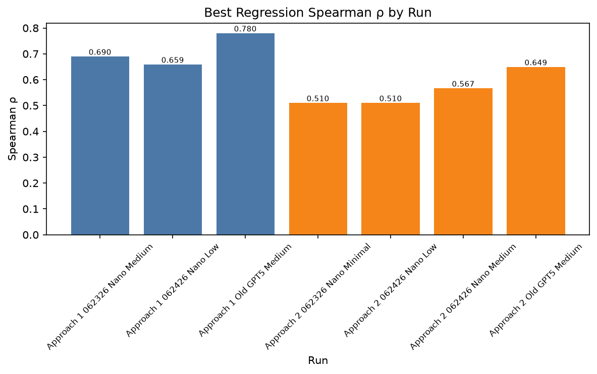
Best high/low dispersion classification performance per run. Uses AUROC when available; otherwise accuracy (clearly labeled). Addresses: which run best separates high vs low dispersion?
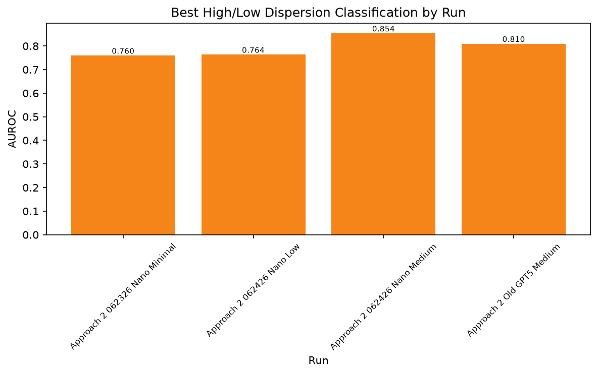
Best relapse classification performance per run (AUROC preferred, else F1/accuracy). Addresses: which run best predicts relapse?
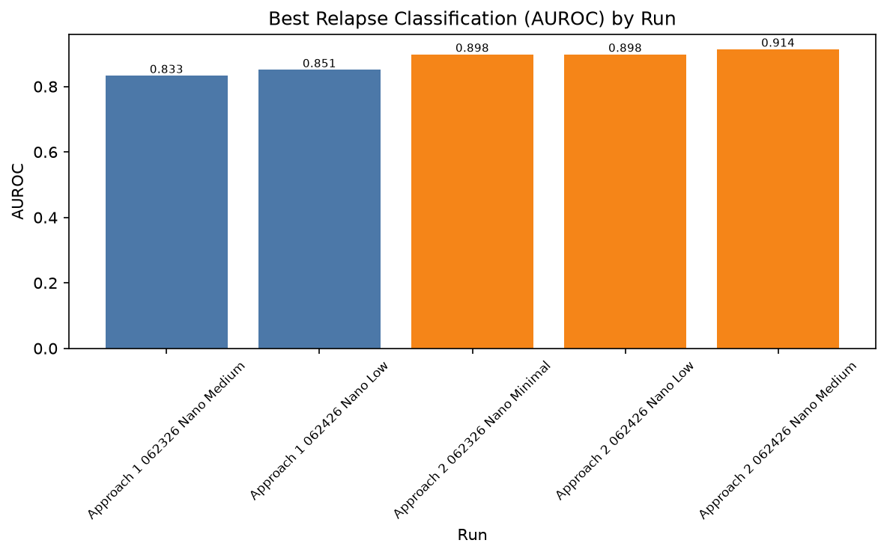
Approach 1 shotset comparison within each run. Addresses: which few-shot exemplar set performs best?
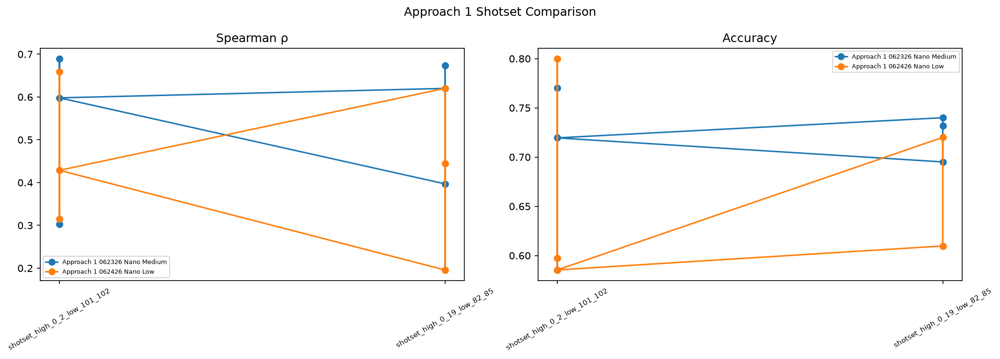
Modality comparison (MRI-only, pathology-only, combined). Addresses: which input modality combination is most informative?
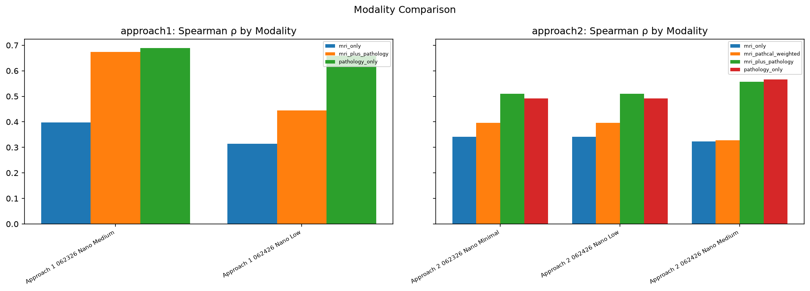
Reasoning-effort comparison across runs, faceted by approach. Addresses: do minimal, low, and medium/default reasoning differ meaningfully?
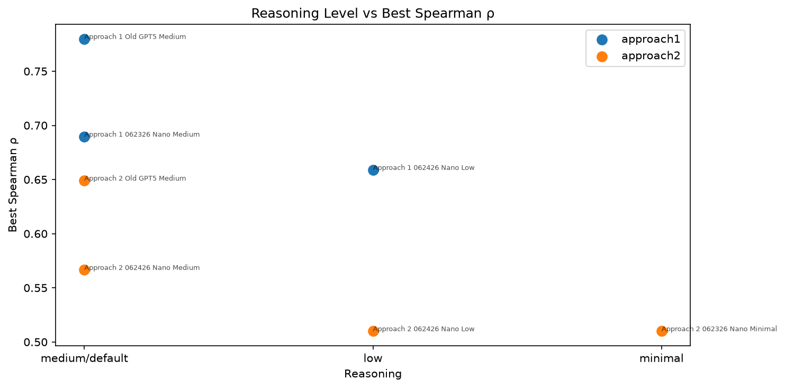
Approach 2 model-family comparison for regression Spearman and high/low AUROC. Addresses: which supervised model family performs best?
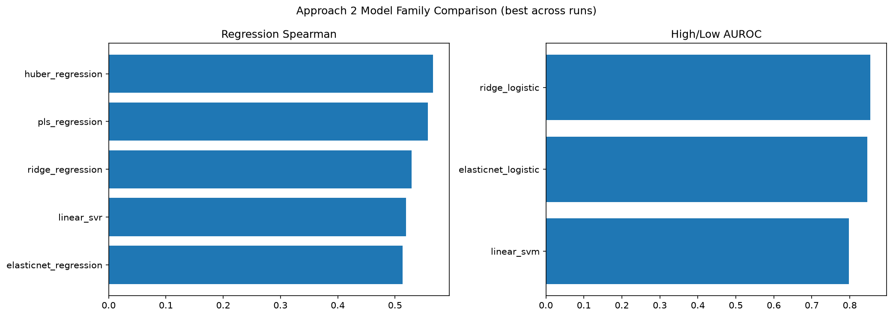
Approach 2 feature-representation comparison. Addresses: which lexical representation is most predictive?
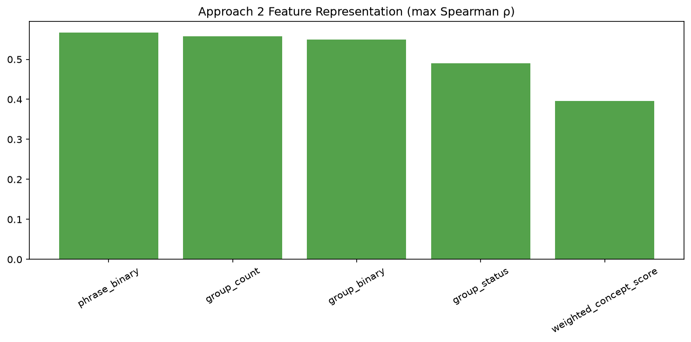
Estimated a priori vs actual LLM cost per run. Addresses: how do cost estimates compare to billed usage?
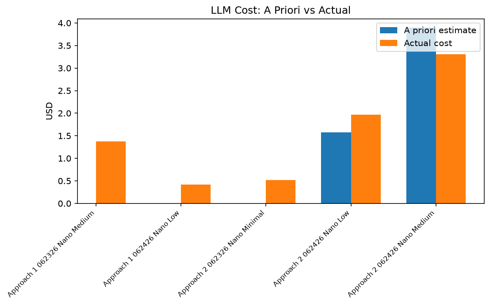
Performance vs actual LLM cost scatter. Addresses: what is the performance–cost trade-off?
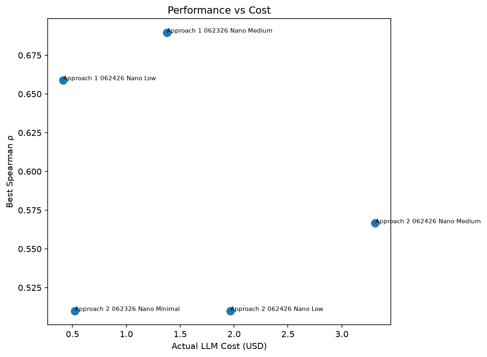
Performance vs runtime or API calls. Addresses: what is the performance–compute trade-off?
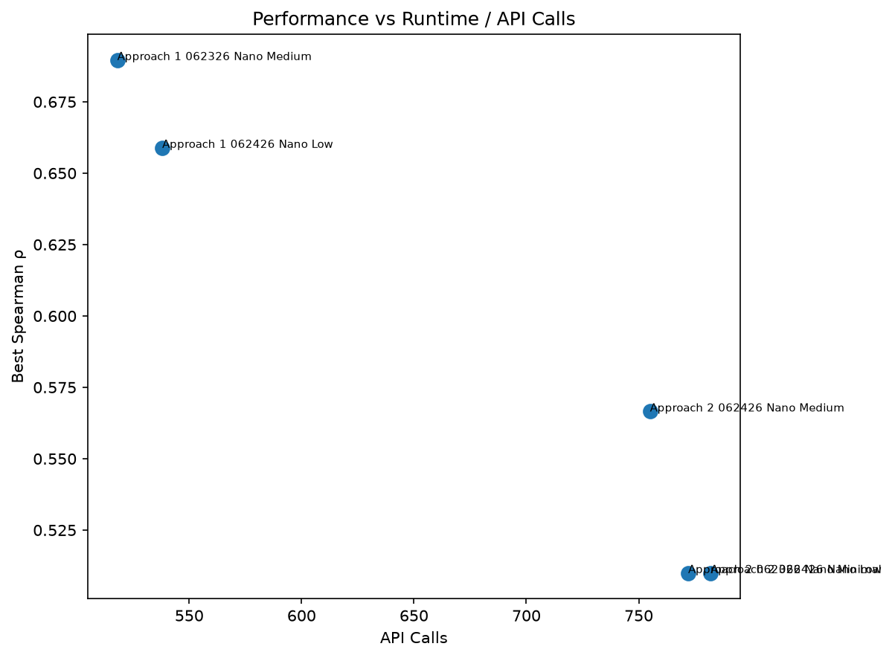
API calls and token usage comparison across runs. Addresses: how do runs differ in LLM resource consumption?
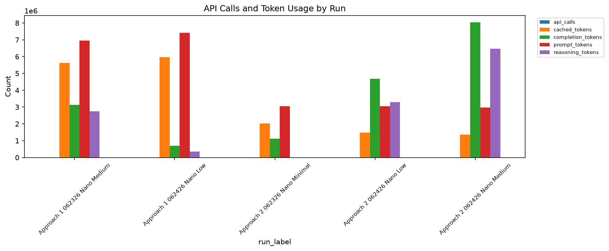
Normalized heatmap of key metrics across runs. Addresses: which runs are strongest across multiple dimensions?
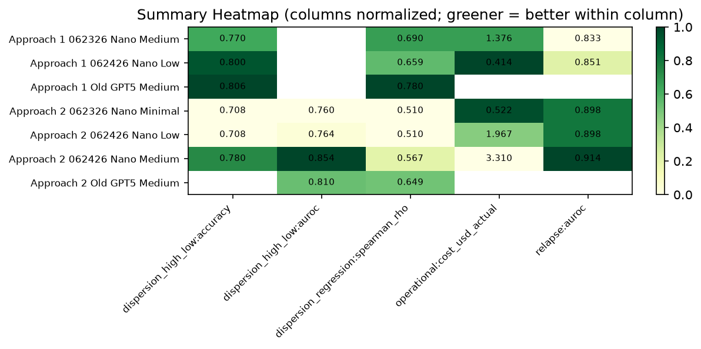
Normalized long-form metrics: normalized_metrics_long.csv (6180 rows).